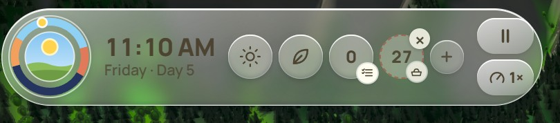

beads: pinned dials; a world-suggested one glows gold, swipe it away
A · The Watch the chronograph, half the width: dial, digits, two pushers, crown. Weather and season move into the dial window.
11:10
rest: mark, dial, time. Tap the dial to pause, swipe it to change speed
B · The Island one pill, three things. Everything else is a live lobe that appears only while it matters.
3
11:10
2:41
world tier (left): friends on the way
stopwatch (right): the ring sweeps
B · live world things grow out of the left, timers and the chosen tile out of the right. Holding a card shrinks the island to the dial.
hungry goats get a bubble on the goats, not a number on the bar
C · The Dial a sun dial and a seal. The world carries the rest: bubbles on animals, light for time, leaves for season.
11:10
NOW
pause
speed
stopwatch
Now: real local time and sun from your location
pin a dial
C · held hold the dial: a watch face blooms with pushers round the rim. Drag the sun to set the hour, flick the window for weather and season. Let go and it folds away.
11:10
A phone
11:10
B phone: lives where the iPhone's own island is
C phone
meadow: build here (a sprout)
forest: a tree (fell, walk, learn)
water: a drop (fish, boat, drink)
rock and peak: look only
Spruce wood
north slope · old and quiet
🪓
🏕️
🥾
Elk bed down here in the heat. Good timber, a day's haul from the lake.
Cursor it becomes what it is over and what you can do there. Right-click (or long-press) a place: a glass tag on a leader line, from the scene's own manifest.

box
Today 9 controls and 2 lines of words; the toy box sits alone bottom left.